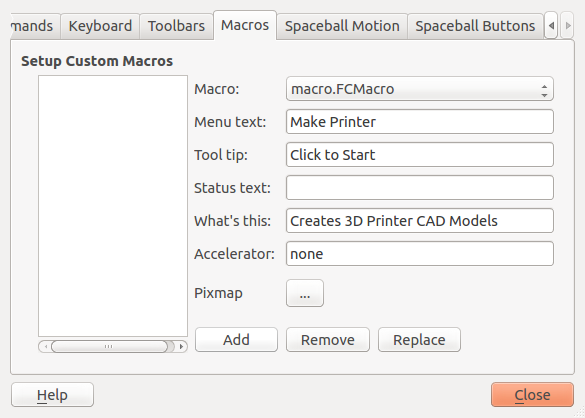
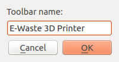
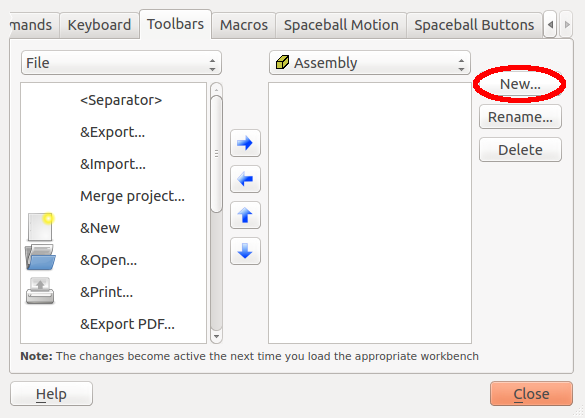
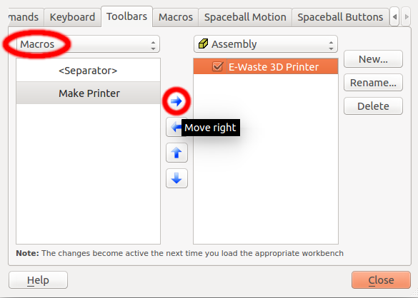
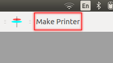

E-Waste 3D Printer
Macros are a convenient way to preform complex actions in FreeCAD. E-Waste 3D Printer has a FreeCAD macro for user convenience. The following tutorial will show you how to install the macro for your own use. However, this tutorial was created in a Linux enviorment, and not all depictions may be an accurate depiction of what you may expirience.
Step 1
After opening up FreeCAD, navigate to Tools > Customize. Next, under the "Macros" tab, input the following information.
Step 2
Next, navigate to the "Toolbars" tab. Click "New..." and enter a title for the macro, and example is depicted to the right.
Step 3
Next, change the left drop-down menu to "Macros" and then click the right arrow to "Move Right."
Step 4
All done! Enjoy your handy printer making button.